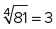

A ideia de função constitui um dos conceitos mais úteis e necessários na Matemática, pois é frequente tentarmos relacionar conjuntos cujos elementos representam grandezas diferentes. Quando calculamos a distância percorrida por um veículo para cada instante, a altura de uma criança no decorrer dos anos ou o preço de uma mercadoria relacionada à quantidade comprada, estamos falando da relação denominada função.
Sendo a dependência entre grandezas algo recorrente na ciência e na natureza, vamos entender, neste capítulo, as representações matemáticas dessas relações, que podem ser estabelecidas por meio de gráficos, fórmulas algébricas e tabelas numéricas.
Mas, para chegarmos à sofisticada definição atual de função, precisaremos de conceitos iniciais e de conhecimentos acerca das linguagens matemáticas.
- De que forma devemos representar a relação entre duas grandezas?
- Toda relação entre grandezas é uma função?
Neste capítulo será abordada a habilidade EM13MAT101.
Sistema de coordenadas
Nos dias de hoje, é imprescindível o uso de GPS para a locomoção em cidades e estradas, sendo que, para que o destino pretendido seja indicado e um ponto ou um local no espaço seja determinado, é necessário um conjunto de informações distintas. Por exemplo, para que este material didático pudesse chegar às suas mãos, provavelmente foi necessário o endereço de sua escola ou de sua casa, e esse endereço nada mais é que um conjunto de informações, como estado, cidade, rua, número e CEP.
Essas informações são denominadas coordenadas, pois, por meio delas determinamos a localização exata de um ponto. Existem muitos tipos de coordenadas que, com determinadas informações, ajudam-nos a localizar um ponto no espaço. Outro exemplo muito famoso de coordenadas são as coordenadas geográficas: latitude e longitude. Com elas podemos determinar um ponto qualquer na superfície terrestre, obtendo assim uma divisão da Terra organizada por quadrantes.
Sistema cartesiano ortogonal
Em grande parte da Matemática, usaremos o sistema cartesiano ortogonal de coordenadas para indicar as posições de pontos no plano e trabalhar com gráficos bidimensionais. Tal sistema consiste na seguinte construção:
- Consideramos duas semirretas perpendiculares – os eixos Ox e Oy
–, cuja interseção ocorre no ponto O, denominado de origem.
Em Geografia, vemos que... 
... o mapeamento do meio terrestre se dá pelo uso das coordenadas geográficas. Esse sistema utiliza um conjunto de linhas horizontais e verticais traçadas sobre o globo terrestre.
Os paralelos são linhas paralelas à Linha do Equador, e suas medidas indicam a latitude. Os paralelos têm essas medidas em graus, com o Equador medindo 0° na latitude e dividindo a Terra em 90° em direção ao Hemisfério Norte e em 90° em direção ao Hemisfério Sul.
Já os chamados meridianos, representados por linhas verticais em mapas, são semicírculos que ligam os polos do planeta. Seu meridiano referencial é o de Greenwich, que possui 0° de longitude; os outros se estendem até 180° para o Ocidente e 180° em direção ao Oriente.
Com o uso dessas coordenadas, podemos determinar localizações precisas no globo, o que auxilia em navegações, atividades aéreas e no estudo do globo em geral.
- Associamos a cada ponto desses eixos um número real. No eixo horizontal Ox, o ponto O coincide com o zero, os números reais positivos ficam à sua direita, e os negativos, à sua esquerda. No eixo vertical Oy, o zero também estará indicado no ponto O, os números reais positivos estarão para cima de O, e os negativos, para baixo dele. Vejamos a figura a seguir.
- E, para determinar qualquer ponto “P” do plano cartesiano, vamos associar a ele dois números (que serão suas coordenadas) por meio do seguinte processo: passamos por P duas retas perpendiculares aos eixos – uma reta, denominada abscissa de P, cortará o eixo Ox no número real xP; e a outra reta, denominada ordenada de P, cortará o eixo Oy no número real yP.

Esse sistema de coordenadas estabelecido será o sistema cartesiano ortogonal. Nele, cada ponto P terá sua localização representada pelo par de números (xP, yP).

Exemplo:
Represente os seguintes pontos no plano cartesiano:
A(4, 5); B(1, 3); C(0, –2); D(–4, –2); E(1, –4); F(–3, 3)

Na divisão dos planos através das retas Ox e Oy, há quatro regiões construídas, as quais denominamos de quadrantes.

Essas regiões estão ligadas ao sinal dos pontos que a elas pertencem. Por exemplo, no primeiro quadrante, há pontos com abscissas e ordenadas positivas.
Vale comentar que os pontos que estão sobre os eixos não pertencem a nenhum quadrante. Os pontos que estão sobre o eixo Ox terão ordenadas iguais a zero, e os que estão sobre o eixo Oy terão abscissas iguais a zero.
Par ordenado
O par de valores que representam um ponto no plano cartesiano (coordenadas)
é representado da seguinte forma: (xP, yP). Nessa representação, a ordem é algo relevante, ou
seja, o ponto (1, 2) é diferente do ponto (2, 1), representando lugares distintos (1, 2)
Os pares ordenados (a, e (c, são iguais se, e somente se, os primeiros números dos pares forem iguais entre si, e os segundos números dos pares também forem iguais entre si:
(a,
Neste capítulo, estamos falando do conceito primitivo conhecido como par ordenado, segundo o qual a ordem representada é importante. Um ponto P do sistema cartesiano será representado por (xP, yP), com xP referindo-se a sua abscissa, o número real da sua projeção no eixo Ox, e yP sendo a sua ordenada, número real da sua projeção no eixo Oy. Com isso, todos os pares ordenados terão suas representações gráficas no sistema aqui estudado.
1 Sabendo que (x
Resolução:
Pela definição de igualdade de pares ordenados, temos:

Logo, para a igualdade ocorrer,  e
y
e
y
Produto cartesiano
Considerando dois conjuntos, A e B, não vazios, definimos como produto cartesiano de A e B, escrito como A 3 B, o conjunto de todos os possíveis pares ordenados (x, y), com x ∈ A e y ∈ B.
A ⋅ BA expressão A ⋅ B deve ser lida como “A cartesiano B” ou “produto cartesiano de A por B”.
Temos de destacar alguns dados importantes:
- Se A ou B forem vazios, então o conjunto A ⋅ B também será vazio.
-
Sendo os conjuntos A e B distintos, então os produtos cartesianos A ⋅ B e B ⋅ A são distintos (A ⋅ B
≠ B ⋅ A). - O produto cartesiano A ⋅ A, em geral, vem representado por A².
Sendo A e B conjuntos finitos, o número de elementos de A ⋅ B é dado por:
n(A ⋅ B)
Para melhor entendimento, vamos a alguns exemplos.
2 Considerando os
conjuntos A
Resolução:
O conjunto com todos os pares ordenados tal que x
A ⋅ B
Sua representação no plano é dada por:

Seguindo a mesma ideia, o conjunto com todos os pares ordenados tal que x ∈ B e y ∈ A é:
B ⋅ A
E sua representação no plano é dada por:

Importante reforçar que A²
A ⋅ A
E sua representação no plano é dada por:

3 Considerando os intervalos dados, determine as representações geométricas dos produtos cartesianos.
Resolução:
Como [1, 4] e [3, 5] são intervalos e possuem infinitos números
reais, é inviável representar todos os pares ordenados por listagem. No entanto, a
representação do produto cartesiano com x ∈ [1, 4] e y

Seguimos a mesma ideia do item anterior, pois ]1, 4] e ]3, 5] são intervalos e possuem infinitos números reais, sendo inviável representar todos os pares ordenados por listagem. Mas vale ficar atento, pois, apesar de x ∈ ]1, 4] e y ∈ ]3, 5], o primeiro intervalo é aberto em 1 e o segundo é aberto em 3, logo, x não pode assumir valor igual a 1 nem y pode assumir valor igual a 3. Vamos à representação gráfica:

No caso, os vértices com pontos não totalmente preenchidos e as linhas tracejadas representam pares ordenados que não pertencem ao produto cartesiano ]1, 4] ⋅ ]3, 5].
Relações
Os conceitos estudados até aqui – par ordenado e produto cartesiano – sempre relacionam dois grupos de elementos e, na organização que adotamos, sempre um elemento estará representado por x (abscissa) e outro por y (ordenada), podendo ambos ser representados graficamente. Apesar de parecer estranha e muito formal, essa associação entre grupos, conjuntos e grandezas é mais comum do que pensamos e recebe o nome de relação.
Definição
Em uma relação ℜ, de A em B, o conjunto A é o conjunto de partida e o conjunto B é o contradomínio, simbolizado por CD(ℜ). No entanto, o subconjunto do conjunto de partida A, que contém os valores correspondentes em B, será chamado de domínio D(ℜ) da relação, e o subconjunto composto dos valores B, que possuem correspondentes em A, será chamado de imagem Im(ℜ). Vejamos o esquema a seguir.
Sejam os conjuntos não vazios A e B, uma relação ℜ de A em B é qualquer
subconjunto do produto cartesiano A ⋅ B. Essa relação pode ser denotada por : A 

É importante comentar que, em muitos casos, a relação entre dois conjuntos possui uma lei (fórmula matemátic que determina a relação entre os dois conjuntos.
Exemplos:
Considerando os conjuntos A
Ou seja, pela relação, temos:
ℜ
Outra representação importante dessa relação é o uso dos diagramas de flechas. Vejamos:

O conjunto constituído por todos os valores de x ∈ A
que possuem um correspondente em y ∈ B é denominado domínio da
relação. Sendo assim, o domínio no exemplo é D(ℜ)
Já o conjunto com todos os valores y ∈ B, no qual
existe um x ∈ A e (x, y) ∈ ℜ, é denominado de
imagem da relação. Com isso, a imagem do nosso exemplo é Im(ℜ)

Consideramos agora os conjuntos A
| x | y |
|---|---|
| 1 | 4 |
| 2 | 5 |
| 3 | 6 |
| 4 | 7 |
| 5 | 8 |
Com isso, a relação fica definida por:
ℜ
Pelo diagrama de flechas, a relação fica representada da seguinte forma:

O domínio dessa relação é dado por D(ℜ)
E a imagem dessa relação é dada por Im(ℜ)
Noções práticas de relações e introdução ao conceito de função
Com os desenvolvimentos científico e linguístico, procuramos entender o comportamento das grandezas e as relações entre elas, chegando a várias formas de representar a interdependência: por gráfico, por tabelas e por fórmulas matemáticas.
Exemplos:
Uma das provas mais famosas de corrida é a maratona, uma disputa realizada em uma distância oficial de 42,192 km, geralmente feita em estradas. Esse esporte move milhões de pessoas no mundo, desde os atletas amadores até os profissionais.
Um maratonista profissional possui uma velocidade média de aproximadamente 20 km/h, ou seja, a cada hora ele percorre cerca de 20 km. Podemos entender a relação entre o tempo de prova e a distância percorrida pelo atleta por meio da seguinte tabela:
| x | y |
|---|---|
| -2 | 0 |
| -2 | 2 |
| 0 | 2 |
Outro modo de analisar a dependência entre ambas as grandezas seria
aplicando uma fórmula obtida da Física: s
- s é a distância percorrida em quilômetros, dependente do tempo de prova;
- s0 é a distância inicial, um valor arbitrário associado ao início do percurso – geralmente, consideramos a linha de largada como o quilômetro zero;
- v é a velocidade média do atleta durante a prova;
- t é o tempo percorrido desde a largada.

Prova de maratona urbana. No pelotão da frente, vemos atletas profissionais.
Otografias/iStockphoto.com
Pelos dados, temos que a distância percorrida em relação ao
tempo por um maratonista profissional pode ser dada pela lei s
Note que cada distância percorrida está associada a um tempo de corrida. A relação entre distância e tempo está representada por um conjunto de pares ordenados (tempo, distânci.
O volume de chuva é distinto em cada mês do ano. Na tabela a seguir, temos a média mensal histórica da precipitação pluviométrica de Porto Alegre (em mm).
TODO TABELA linha 476
É importante para a cidade conhecer as médias históricas de pluviosidade, para prevenir transtornos nos períodos críticos.
c1a1p1c1o1m1/iStockphoto.com
Nesse caso, cada mês do ano está associado a uma média de precipitação, mas não há uma lei (ou fórmula matemátic que estabeleça uma relação entre as grandezas, as quais também podem ser representadas por meio de um par de valores, ou seja, um par ordenado (mês do ano, pluviosidad.
Analistas financeiros tentam entender e, assim, prever o comportamento do mercado financeiro por meio de gráficos. Ao analisar o gráfico de uma ação negociada em bolsa, observamos o conjunto de pares ordenados (tempo, valor da ação), que, além de poderem ser representados por tabelas, como nos exemplos dados, podem ser escritos no plano cartesiano.
Observe o gráfico do valor de uma ação:

No gráfico, destacamos o valor da ação no início do ano. No entanto, ele nos mostra, de forma mais contínua, quanto custa a ação para cada tempo transcorrido. No caso, não há uma fórmula matemática viável para relacionar os conjuntos, mas o gráfico expõe o comportamento, sendo que o uso de uma tabela também seria possível.
4 Enem PPL 2016 Ano após ano, muitos brasileiros são vítimas de homicídio no Brasil. O gráfico apresenta a quantidade de homicídios registrados no Brasil entre os anos 2000 e 2009.
Se o maior crescimento anual absoluto observado nessa série se repetisse de 2009 para 2010, então o número de homicídios no Brasil ao final desse período seria igual a:Resolução:
Alternativa: D
O maior crescimento anual absoluto observado nessa série corresponde à porção do gráfico entre 2000 e 2001, lembrando que “crescimento absoluto” é o módulo da diferença entre o valor de um ano e o do ano anterior, que é menor. Assim, o maior crescimento anual absoluto será igual a:
47 943 – 45 360
Caso esse número se repetisse de 2009 para 2010, o número de homicídios ao final do período seria de:
51 434
5 Enem PPL 2015 Doenças relacionadas ao saneamento ambiental inadequado (DRSAI) podem estar associadas ao abastecimento deficiente de água, ao tratamento inadequado do esgoto sanitário, à contaminação por resíduos sólidos ou a condições precárias de moradia. O gráfico apresenta o número de casos de duas DRSAI de uma cidade:
O mês em que se tem a maior diferença entre o número de casos das doenças de tipo A e B é:
Resolução:
Alternativa: D
Como podemos observar no gráfico, a maior diferença entre o
número de casos das doenças de tipo A e B ocorre no mês de setembro: 1 200 –
100
A verdade é que podemos relacionar dois conjuntos de diversas formas e situações diferentes. Entre essas formas, existe uma que unifica importantes conceitos e que será fundamental para grande parte da construção matemática feita daqui em diante. É o conceito de função. A partir desse ponto, trabalharemos as principais funções elementares e seus conceitos.
A verdade é que podemos relacionar dois conjuntos de diversas formas e situações diferentes. Entre essas formas, existe uma que unifica importantes conceitos e que será fundamental para grande parte da construção matemática feita daqui em diante. É o conceito de função. A partir desse ponto, trabalharemos as principais funções elementares e seus conceitos.
Função
A função é um caso particular das relações e possui a seguinte definição:
A relação f de A em B (com A e B conjuntos
não vazios) é definida função se, e somente se, todos os
elementos de x ∈ A tiverem um único elemento
correspondente y ∈ B tal que (x, y)
Fiquemos atentos às notações que podem aparecer no trato com
as funções. Elas podem ser representadas pelas notações a seguir:
 ;
;  ou f
ou f
Importante notar a ordem dos conjuntos na representação, que nos diz que o conjunto A (conjunto de partida da relação) é o domínio da função, ou seja, no conjunto dos pares ordenados da função, todos os elementos de A farão parte da primeira coordenada (assumirão o valor de x) uma única vez.
Então, na função de f: A ñ B, temos a seguinte representação:

- O domínio de f é o próprio conjunto A, isto
é, D(
- O contradomínio de f é o próprio conjunto B,
isto é, CD(
- A imagem de f é o conjunto Im(
Os valores de y ∈ B que
possuem um valor associado x ∈ A serão
denominados de imagem de x pela função f e serão
indicados pela nomenclatura f(x)
Exemplos:
A relação f a seguir é uma função de A em B, pois todos os elementos de A têm um único correspondente em B.

Com isso, a função fica definida por f
- Domínio: D(
- Contradomínio: CD(
- Imagem: Im(
Note que: f(1)
O mesmo acontece na relação g a seguir. Ela também
é uma função de A em B, pois todos os elementos de A têm um único
correspondente em B. Repare que cada elemento do domínio está associado ao seu
quadrado, isto é, há uma lei para a relação dos conjuntos (y

A função fica definida por g
- Domínio: D(g)
- Contradomínio: CD(g)
- Imagem: Im(g)
Note que: f(–2)
Pela definição descrita, a relação h não é uma função de A em B. Há um elemento em A (no caso, o elemento 2) que possui dois elementos correspondentes em B.

A relação t também não é uma função de A em B, pois o elemento –3 em A não possui elemento correspondente em B.

Encontrando funções no cotidiano
No início do capítulo, discutimos várias associações entre grandezas que aparecem na natureza, relacionando assim dois conjuntos através de pares ordenados. Agora que conhecemos a definição de função e sabemos quais especificidades uma relação deve ter para ser denominada função, vamos refletir. Quantas dessas relações que você conhece, que fazem parte de nossa rotina, satisfazem as condições para serem consideradas funções?
Pense nos exemplos citados neste capítulo!
Função real de variável real
Uma função f: A
Podemos tomar como exemplo a função: f:  . Essa é uma função real de variável real, pois
. Essa é uma função real de variável real, pois
Domínio e contradomínio
Quando definimos uma função, é muito importante conhecer seu domínio, seu contradomínio e, caso exista, a lei de associação dos dois conjuntos. No entanto, quando se trata de uma função real de variável real, vamos nos deparar de forma corriqueira com funções que omitem os conjuntos, deixando explícita apenas a lei de associação entre x e y. Quando isso acontecer, devemos ter o seguinte entendimento:
-
O
contradomínio da função será o conjunto dos reais CD(
R . -
O domínio da função será um subconjunto
dos reais, D( ⊂
R , e será composto por todos os valores de x que, substituídos na lei, apresentam uma imagem, y
Exemplos:
Função definida pela lei f(x)
Como dito anteriormente, o contradomínio serão os reais, CD(
Função definida pela lei 
Novamente, o contradomínio serão os reais, CD(
Portanto, D(
Função definida pela lei 
O contradomínio serão os reais, CD(
Função definida pela lei 
O contradomínio será o conjunto dos reais, CD(

O domínio da função é D(
Gráfico de uma função real de variável real
Como a função expressa uma relação para um conjunto de pares ordenados, podemos representá-la no plano cartesiano. Esse tipo de apresentação é útil para observar o comportamento da função, que, na maior parte dos nossos estudos, terá uma quantidade infinita de elementos, tornando inviável o uso do diagrama de flechas ou apenas o de tabelas.
Para a representação do gráfico de uma função f: A

Observe que o domínio da função pode ser obtido pela
projeção do gráfico no eixo Ox; a imagem da função pode ser obtida por meio da
projeção do gráfico no eixo Oy. O contradomínio B, caso não esteja
explicitamente definido, será o conjunto dos reais
A partir do gráfico, podemos adotar uma técnica para verificar se a relação é ou não uma função. Para isso, podemos traçar um feixe de retas paralelas ao eixo Oy, percorrendo os valores possíveis de abscissas no conjunto. Caso todas as retas do feixe interceptem o gráfico uma única vez, significa que se trata de uma função.
Vejamos alguns exemplos de relações definidas de
Exemplos:

A relação f é uma função, pois dentro do domínio estabelecido todas as paralelas ao eixo Oy interceptam o gráfico uma única vez.

A reta em destaque intercepta o gráfico em três pontos distintos; isto é, uma abscissa do domínio possui três correspondentes na imagem. Logo, g não é uma função.
Estudo do sinal da função
Até aqui, estudamos a definição de função e vimos que a
imagem de x pela função f, quando representada no plano
cartesiano, será representada pelas ordenadas dos pontos do gráfico, indicando
tal imagem por y
Sendo assim, pelos gráficos das funções, podemos determinar quando a imagem terá um valor positivo, negativo ou se será nula, obtendo um entendimento do comportamento do sinal da função. Vejamos um gráfico que mostra a variação de temperatura das 24 horas de uma determinada região.

Pelo gráfico, podemos analisar a temperatura da região no período de 24 horas de um certo dia.
- Temperatura positiva, isto é, imagem da função positiva
(f(x)
> 0) no período em que x ∈ ] 8, 22 [. - Temperatura negativa, isto é, imagem da função negativa
(f(x)
< 0) no período em que x ∈ [ 0, 8 [ ∪ ] 22, 24 ]. - Temperatura nula, isto é, imagem da função igual a zero
(f(x)
No estudo das funções, podemos entender que:
- A imagem da função é positiva ou a função é positiva para
valores de x pertencentes ao domínio se, e somente se, f(x)
> 0. - A imagem da função é negativa ou a função é negativa para
valores de x pertencentes ao domínio se, e somente se, f(x)
< 0. - A imagem da função é nula ou a função é igual a zero para
valores de x pertencentes ao domínio se, e somente se, f(x)
Função crescente e função decrescente
O comportamento de uma função também deve ser estudado por meio do seu crescimento ou do seu decrescimento a partir de um subconjunto de seu domínio ou de seu domínio todo. Vejamos dois exemplos de gráficos.

No gráfico I, dentro do intervalo apresentado, a
função é definida crescente, pois, para valores reais distintos x1,
x2 pertencentes ao domínio, temos que x2
No gráfico II, dentro do intervalo apresentado, a
função é definida decrescente, pois, para valores reais distintos x1,
x2 pertencentes ao domínio, temos que x2
1
Considere as relações a seguir, listando todos os elementos da relação e representado-os em um diagrama de flechas e no plano cartesiano.
- Dados os conjuntos A
- Dado o conjunto P
Relação: R
Relação: R
2
Baseando-se na definição de função, indique quais relações a seguir são consideradas funções.
- ℜ1: A
ñ B - ℜ2: A
ñ B - ℜ3: A
ñ B - ℜ4:
R ñ R - ℜ5:
R ñ R - ℜ6:
R ñ R


3
UFPB Paulo é um zoólogo que realiza suas observações em um ponto, o de observação, e guarda seus equipamentos em outro ponto, o de apoio.
Em certo dia, para realizar seu trabalho, fez o seguinte trajeto:
- Partiu do ponto de apoio com destino ao de observação e, da metade do caminho, voltou ao ponto de apoio, para pegar alguns equipamentos que havia esquecido. Ali demorou apenas o suficiente para encontrar tudo de que necessitava. Em seguida, partiu novamente em direção ao ponto de observação e lá chegou.
- Depois de fazer algumas observações e anotações, partiu com destino ao ponto de apoio. Após alguns minutos de caminhada, lembrou que havia esquecido o binóculo no ponto de observação e, nesse instante, retornou para pegá-lo. Ao chegar ao ponto de observação, demorou ali um pouco mais, pois avistou uma espécie rara e resolveu observá-la. Depois disso, retornou ao ponto de apoio, para guardar seus equipamentos, encerrando o seu trabalho nesse dia.
O gráfico a seguir mostra a variação da distância do zoólogo ao ponto de apoio, em função do tempo, medido em minutos, a partir do instante em que ele deixou o ponto de apoio pela primeira vez.

Com base nas informações apresentadas e no gráfico dado, identifique as afirmativas corretas.
- ( ) O zoólogo chegou ao ponto de apoio, para pegar os equipamentos que ali havia esquecido, 10 minutos depois de ter saído desse ponto pela primeira vez.
- ( ) O zoólogo chegou ao ponto de observação, pela primeira vez, 15 minutos depois de ter saídodo ponto de apoio, após apanhar os equipamentos que ali havia esquecido.
- ( ) O zoólogo esteve no ponto de observação durante 20 minutos.
- ( ) O zoólogo notou que havia esquecido o binóculo 5 minutos após deixar o ponto de observação.
- ( ) O tempo transcorrido da chegada do zoólogo ao ponto de observação, pela primeira vez, a sua chegada ao ponto de apoio, para encerrar o trabalho, foi de 50 minutos.
4
Considere o conjunto A
- os
valores de

- a representação da função no plano cartesiano dos pares ordenados do item a e construa um esboço do gráfico da função.
5
Fuvest 2019 Se a função  e a função g:
e a função g:
-

- x2
- 2x
- 2x
- x
6
Fuvest 2018 Sejam D e
e 
Considere, ainda, I
Nessas condições,
- D
F = Dg e IF = Ig. - tanto D
F e Dg quanto IF e Ig diferem em apenas um ponto. - D
F e Dg diferem em apenas um ponto, IF e Ig diferem em mais de um ponto. - D
F e Dg diferem em mais de um ponto, IF e Ig diferem em apenas um ponto. - tanto D
F e Dg quanto IF e Ig diferem em mais de um ponto.
7
UFMG Considere a função y
 e x
e x

Assim sendo, para quais valores reais de x se
tem 0


8
Unicamp 2018 A figura a seguir
exibe o gráfico de uma função y = ƒ(x) para 0

O gráfico de y = [ƒ(x)]2 é dado por


1
UFRN O jogo da velha tradicional consiste em um tabuleiro quadrado dividido em 9 partes, no qual dois jogadores, alternadamente, vão colocando peças (uma a cada jogad. Ganha o jogo aquele que alinhar, na horizontal, na vertical ou na diagonal, três de suas peças.
Uma versão chamada JOGO DA VELHA DE DESCARTES, em homenagem ao criador da geometria analítica, René Descartes, consiste na construção de um subconjunto do plano cartesiano, no qual cada jogador, alternadamente, anota as coordenadas de um ponto do plano. Ganha o jogo aquele que primeiro alinhar três de seus pontos. A sequência abaixo é o registro da sequência das jogadas de uma partida entre dois jogadores iniciantes, em que um anotava suas jogadas com a cor preta e o outro, com a cor cinza. Eles desistiram da partida sem perceber que um deles havia ganhado.
((1,1), (2,3), (2,2), (3,3), (4,3), (1,3), (2,1), (3,1), (3,2), (4,2))
Com base nessas informações, é correto afirmar que o jogador que ganhou a partida foi o que anotava sua jogada com a cor
- cinza, em sua terceira jogada.
- preta, em sua terceira jogada.
- cinza, em sua quarta jogada.
- preta, em sua quarta jogada.
2
Fuvest 2020 A função E de Euler
determina, para cada número natural
- 20
- 22
- 24
- 25
3
Unicamp 2018 Seja a função h(x)
definida para todo número real x por,

Então, h(h(h(0))) é igual a
- 19
- 2
- 4
- 8
4
Enem O gráfico fornece os valores das ações da empresa XPN, no período das 10 às 17 horas, num dia em que elas oscilaram acentuadamente em curtos intervalos de tempo.

Neste dia, cinco investidores compraram e venderam o mesmo volume de ações, porém em horários diferentes, de acordo com a seguinte tabela.
| Investidor | Hora da Compra | Hora da Venda |
|---|---|---|
| 1 | 10:00 | 15:00 |
| 2 | 10:00 | 17:00 |
| 3 | 13:00 | 15:00 |
| 4 | 15:00 | 16:00 |
| 5 | 16:00 | 17:00 |
Com relação ao capital adquirido na compra e venda das ações, qual investidor fez o melhor negócio?
- 1
- 2
- 3
- 4
- 5
5
Enem PPL 2017 GH é a sigla que denomina o hormônio do crescimento (do inglês growth hormone),indispensável para retardar o processo de envelhecimento. À medida que envelhecemos, a liberação desse hormônio na corrente sanguínea vai diminuindo. Estudos têm demonstrado, porém, que alguns métodos de treinamento aumentam a produção de GH. Em uma pesquisa, dez homens foram submetidos a sessões de 30 minutos de corrida, em uma esteira, em diferentes intensidades: muito leve, leve, moderada e máxima. As dosagens de GH, medidas por coletas de sangue feitas antes e logo após as sessões, e também 1 hora e 2 horas após o término, são fornecidas no gráfico.

Em qual(is) medição(ões) a liberação de GH na corrente sanguínea em uma sessão de intensidade máxima foi maior que a liberação de GH ocorrida nas demais intensidades?
- Apenas na medição feita logo após a sessão de treinamento.
- Apenas na medição feita 1 hora após a sessão de treinamento.
- Apenas na medição feita após 2 horas após a sessão de treinamento.
- Nas medições feitas logo após e 1 hora após a sessão de treinamento.
- Nas medições feitas logo após, 1 hora após e 2 horas após a sessão de treinamento.
6
Enem 2017 Os congestionamentos de trânsito constituem um problema que aflige, todos os dias, milhares de motoristas brasileiros. O gráfico ilustra a situação, representando, ao longo de um intervalo definido de tempo, a variação da velocidade de um veículo durante um congestionamento.

Quantos minutos o veículo permaneceu imóvel ao longo do intervalo de tempo total analisado?
- 4
- 3
- 2
- 1
- 0
7
Enem 2017 Dois reservatórios A e B são alimen-tados por bombas distintas por um período de 20 horas. A quantidade de água contida em cada reservatório nesse período pode ser visualizada na figura.

- 1.
- 2.
- 4.
- 5.
- 6.
8
Unicamp 2017 Considere o quadrado
de lado a

O gráfico da função y = A(x) no plano cartesiano é dado por:


9
Cefet-MG 2016 Na figura a seguir,
estão representados os gráficos de duas funções reais, f e g, com
domínios reais. Para cada x ∈

- 0.
- 4.
- 10.
- 25.
10
EEAR-SP 2017 Se  é uma função, seu domínio é D
é uma função, seu domínio é D
- x
> 4 e x≠ 1 - x
< 4 e x≠ 6 1 - x
< –4 e x≠ –1 - x
> –4 e x≠ –1
11
Ifal O domínio da função dada por  é
é
- {x ∈
R | –2≤ x≤ 3}. - {x ∈
R | –2≤ x< 3}. - {x ∈
R | 2≤ x< 3}. - {x ∈
R | –2≤ x≤ 3}. - {x ∈
R | x≠ 3}.
12
Unicamp 2016 Considere a função afim f(x) = ax + b definida para todo número real x, onde a e b são números reais. Sabendo que f(4) = 2, podemos afirmar que f(f(3) + ƒ(5)) é igual a
- 5.
- 4.
- 3.
- 2.
13
Unicamp-SP 2017 Seja f(x) uma
função tal que para todo número real x temos que
x ∙ f(x – 1)
- 0.
- 1.
- 2.
- 3.
14
Esc. Naval-RJ Considere f uma função real de variável real tal que:
1. f(x
2. f(1)
3.

Então  é
igual a:
é
igual a:
- 108
- 72
- 54
- 36
- 12
15
Unicamp 2018 (Adapt.) Sendo c um número real, considere a função afim f(x) = 2x + c, definida para todo número real x.
Encontre todas as soluções da equação [f(x)]3 =
16
FMP-RJ 2018 Uma função f:
- f(1)
- f(3)
- f(x)
≤ 0, para todo valor de x.
Um gráfico que poderia ser aquele associado à função é:


17
Enem 2016 Uma cisterna de 6 000 L foi esvaziada em um período de 3 h. Na primeira hora foi utilizada apenas uma bomba, mas nas duas horas seguintes, a fim de reduzir o tempo de esvaziamento, outra bomba foi ligada junto com a primeira. O gráfico, formado por dois segmentos de reta, mostra o volume de água presente na cisterna, em função do tempo.

Qual é a vazão, em litros por hora, da bomba que foi ligada no início da segunda hora?
- 1 000
- 1 250
- 1 500
- 2 000
- 2 500
18
IFPE 2018 Ao realizar um estudo sobre acidentes de trabalho em empresas do polo de confecções do Agreste, Dirce, aluna do curso de Segurança do Trabalho no campus Caruaru, desenhou o gráfico a seguir:

Com base no gráfico feito pela aluna, é correto afirmar que
- o conjunto imagem da função representada pelo gráfico é o intervalo natural [2, 6].
- a maioria das empresas pesquisadas teve mais de 4 acidentes de trabalho no semestre.
- metade das empresas pesquisadas registraram menos de 3 acidentes de trabalho no semestre.
- a empresa H teve mais acidentes de trabalho que a empresa O no último semestre.
- a empresa P teve o menor número de acidentes de trabalho no último semestre.
19
EPCar-MG 2018 Uma consulta pública realizada pelo Instituto que organiza a aplicação do Exame Nacional do Ensino Médio, em fevereiro de 2017, visou conhecer a preferência sobre os possíveis modelos de aplicação do Exame:
- Modelo A: Testes em apenas 1 dia
- Modelo B: Testes no sábado e no domingo
- Modelo C: Testes em dois domingos consecutivos
Suponha que tenham sido consultadas um total de x pessoas entre moradores da capital e do interior. Desse total, 40 pessoas do interior e 60 da capital não manifestaram preferência pelos Modelos A, B ou C.
O gráfico a seguir mostra os resultados dos que manifestaram sua preferência:

Baseado nestas informações, é correto afirmar que
- 20% das pessoas consultadas, exatamente, preferem a aplicação do Exame em um único dia.
- o número total das pessoas consultadas no interior e na capital é o mesmo.
-
 das pessoas
que manifestaram preferência pelos Modelos optaram pela
realização do Exame em dois dias.
das pessoas
que manifestaram preferência pelos Modelos optaram pela
realização do Exame em dois dias.
- exatamente 12% das pessoas consultadas não manifestaram opinião.
20
UPF-RS Na figura a
seguir estão representadas no plano cartesiano duas funções, y

Seja E o conjunto de números reais
definido por E
- {x ∈
R | 0< x< 1} ∪ {x ∈R | 5< x< 7} - {x ∈
R | 0< x< 2} ∪ {x ∈R | 4< x< 6} - {x ∈
R | 0< x< 2} ∪ {x ∈R | 5< x< 7} - {x ∈
R | 1< x< 5} - {x ∈
R | 0< x< 6}
21
Unesp 2014 Os
gráficos de duas funções f(x) e g(x), definidas de

No intervalo [–4, 5], o conjunto solução
da inequação f(x)
- {x ∈
R | –1< x< 3}. - {x ∈
R | –1< x< 0 ou 3< x≤ 5}. - {x ∈
R | –4≤ x< –1 ou 0< x< 3}. - {x ∈
R | –4< x< 0}. - {x ∈
R | –4≤ x< –1 ou 3< x< 5}.
22
Cefet-MG As funções reais f e g estão representadas no gráfico a seguir.

O conjunto solução da inequação produto
f(x)
- {x ∈
R | x≤ –2 ou –1< x≤ 2}. - {x ∈
R | –2≤ x≤ –1 ou 0≤ x≤ 2}. - {x ∈
R | –2≤ x≤ 2}. - {x ∈
R | –1≤ x≤ 0}.
23
EsPCEx-SP 2018 Na
figura estão representados os gráficos das funções reais f
(quadrátic e g (modular) definidas em

Sendo  assinale a alternativa que apresenta os
intervalos onde h assume valores negativos.
assinale a alternativa que apresenta os
intervalos onde h assume valores negativos.
- ] –3, –1 ] ∪ ] 6, 8 ]
- ] –∞, –3 [ ∪ ]
–1, 6 [ ∪ ] 8,
- ] –∞, 2 [ ∪ ]
4,
- ] –∞, –3 [ ∪ ]
–1, 2 [ ∪ [ 7,
- ] –3, –1 ] ∪ [ 2, 4 [ ∪ ] 6, 8 ]
24
EsPCEx-SP 2014 Na figura a seguir está representado o gráfico da função polinomial f, definida no intervalo real [a, b].

- f é crescente no intervalo [a, 0].
- f(x)
≤ f( para todo x no intervalo [d, b]. - f(x)
≤ 0 para todo x no intervalo [c, 0]. - a função f é decrescente no intervalo [c, e].
- se x1 ∈ [a, c]
e x2 ∈ [d, e], então f(x1)
< f(x2).